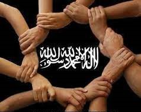

The West
The West always feared muslims as they were always united so what they did was
- Seperate us
The muslims were always united but through colonilism they were able to seperate us
- Most Importantly, The spread of fake propogandas
by seperating us and putting in our minds that this is
jordanian,palestinian or iraqi or what so ever so for example in 1944 jordan and palestine were one, jordan and Iraq united in 1958
and before that we were all united and whoever says something about this topic (negatively) does not follow the prophet pbuh
- The spreading of bad habbits in the muslims nation and much more (in details later)
